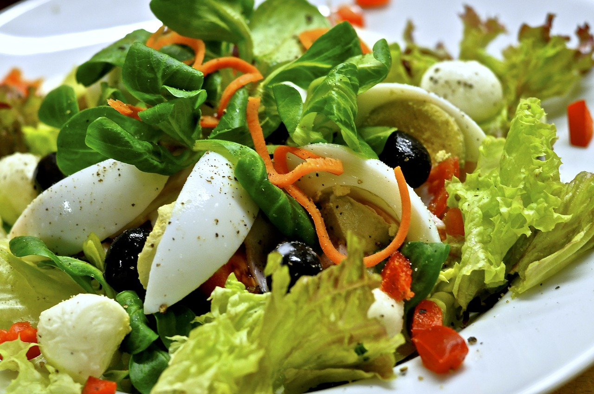

Salad
Trixy's Rabbit Friendly Salad
This Recipe was handed down for five generations. It contains five layers of delicious greens, fruits, vegitables, and cheese. This dish is the culmination of a lifetime of trial and error resulting in literally the best salad in history.
Ingredients
- Romaine Lettuce
- Tomatos
- Mozerella Cheese
- Dog Cheese
- Sweet Bell Peppers
- Cucumbers
Steps
- Slice the tomatos,cucumbers, peppers into half-circles.
- Shred the lettuce into manageable sizes
- Add 1 cup of dog cheese to the lettuce
- Add remaining ingredients
- Mix together lightly
- Serve